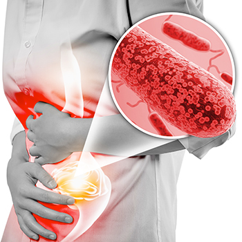
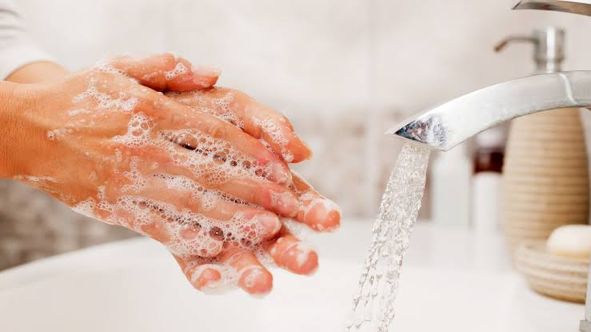

How E. coli Makes Us Sick
Posted 11 November 2026 · 3 min read

Meet the bacterium
Escherichia coli (E. coli) is a Gram-negative, rod-shaped bacterium that lives in the
intestines of humans and animals. Most strains are harmless and even help digestion.
Some strains, such as Shiga toxin-producing E. coli (STEC), release toxins that damage
the lining of the intestine.
How it spreads
- Eating undercooked beef or unpasteurised (raw) milk
- Eating raw fruits and vegetables washed in contaminated water
- Drinking untreated water
- Contact with faeces on hands, surfaces or animals, then touching the mouth
Symptoms to watch for
Symptoms usually appear three to four days after infection, though it can take from one to
ten. They include diarrhoea (sometimes bloody), abdominal cramps, nausea and tiredness.
Fever and vomiting are less common. In some people, especially young children, the
infection can lead to haemolytic uraemic syndrome (HUS), which can damage the kidneys.
Learn more:
WHO E. coli fact sheet ·
CDC: About E. coli
Five Habits That Stop E. coli
Posted 11 November 2026 · 3 min read

1. Wash your hands properly
Use soap and clean running water for at least 20 seconds. Do it after using the toilet,
before preparing or eating food, and after handling animals.
2. Cook food thoroughly
Cook meat, especially minced meat, until it is cooked all the way through and no longer pink
inside. Heat leftovers until they are steaming hot.
3. Drink safe water and milk
Boil or treat drinking water when you are unsure of its source. Choose pasteurised or boiled milk.
4. Wash produce and keep foods apart
Rinse fruits and vegetables in safe water. Use separate boards and knives for raw meat and
ready-to-eat food.
5. Know when to seek care
If you have diarrhoea, drink plenty of fluids or oral rehydration solution (ORS) and rest.
Go to a health facility for bloody diarrhoea, high fever, diarrhoea lasting more than three
days, or signs of dehydration. Do not take antibiotics or anti-diarrhoea medicines without
medical advice.
Learn more:
WHO: World Hand Hygiene Day ·
Kenya Ministry of Health ·
Ask us a question